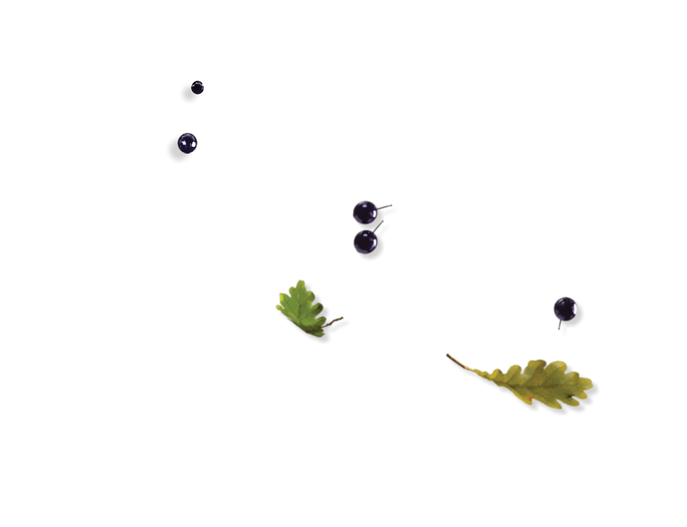
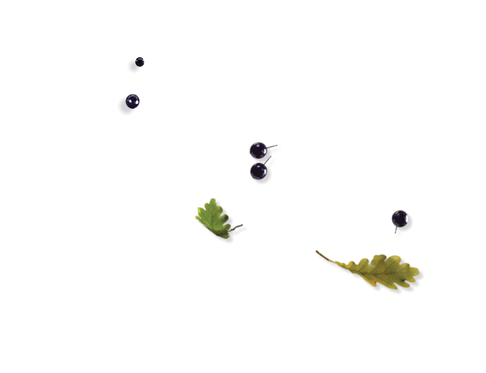

the view from above:
Why Our Future
May Depend on
the Fate of Birds
This story is best experienced with sound.
Use headphones and turn up the volume.
THE EARTH GIVES US SIGNS, if we know how to read them. Some scientists obsessively track environmental fluctuations like shifts in precipitation and insect populations in search of early warnings of climate change. But one co-inhabitant of Earth can teach us more about the climate than any other: birds.
“Birds need what people need, such as clean water, healthy forests and resilient coastlines,” says David Yarnold, the president and C.E.O. of the National Audubon Society.
‘As the canary in the coal mine metaphor suggests, when the birds are in trouble, so are we.
As the canary in the coal mine metaphor suggests, when the birds are in trouble, so are we. Birds perform invaluable ecosystem services necessary for our survival, like pollinating plants and dispersing seeds to help countless species of plants survive. They also eat between 400 million and 500 million metric tons of insects a year globally, reducing the need for pesticides. Birds even perform the role of garbage disposal by devouring animal carcasses that would otherwise rot.
As the effects of climate change become more pervasive, five North American species are particularly threatened. The Painted Redstart, Scarlet Tanager, Pygmy Nuthatch, Allen’s Hummingbird and Mountain Bluebird each help the environment in many ways, but their habitats are at risk, unless we start revitalization efforts soon.
From the soft buzzing of the hummingbird’s wings to the sweet whistle of a warbler, birds are constantly communicating. Through their actions and very existence, they’re also sending us a message. It’s time to listen. Learn about these beautiful, essential creatures and the incredible impact they have on the planet, below.
Painted Redstarts
Keep Earth Cool
One bird species particularly affected by climate change is the beautiful Painted Redstart. This small songbird is native to Arizona, Texas, New Mexico and Mexico. With a black body, bright red belly and white stripe on its wings and tail, the Painted Redstart can be found nesting on steep hillsides or in ledge crevices. When foraging, they flash their tail and wings to scare insects out into the open. This unique bird breeds in mixed oak and pine forests, which are unfortunately threatened by climate change and deforestation.
100 percent of the Painted Redstart’s summer habitat in the United States is projected to shift because of climate change.
In the southwestern United States, climate change often takes the form of wildfires. In 2017, around 430,000 acres were destroyed by wildfires in Arizona alone. Temperatures in this area are projected to increase drastically, causing more droughts and heatwaves, decimating the Painted Redstart’s habitat.
Because it eats flies, moths, leafhoppers and caterpillars (as well as tree sap), if these birds die out, those insect populations might grow unchecked. This would lead to significant losses in vegetation. Plants absorb carbon dioxide; with fewer plants, the excess carbon dioxide would heat the atmosphere at an ever faster rate, speeding the effects of global warming. These birds serve as a vivid reminder that every little piece of the natural world is connected.


Scarlet Tanagers
Protect Our Forests
On the other side of the country, you’ll find the Scarlet Tanager. This gorgeous bird with a burry song is found in large forests in the northeastern United States and spends winters in the tropical rainforest of lowlands east of the Andes. The females of the species are a yellow-green with gray wings and males are bright red with black wings. The Scarlet Tanager eats a variety of insects, including bees, spruce budworms, termites and beetles, and occasionally it consumes fruit. They are territorial birds, and males are known to have dramatic singing battles over territory. As forests shrink because of deforestation and climate change, however, the Scarlet Tanager will be forced to move to areas where their preferred food may not be available, causing their populations to dwindle.
The Scarlet Tanager is predicted to lose 94 percent of its summer range.
Scarlet Tanagers are integral to the natural ecosystem. They feed on spruce budworms, which would otherwise cause significant damage to coniferous forests. Without this bird to manage insect numbers, our vital forests could be destroyed by hungry worms.


 



Pygmy Nuthatches
Curb Greenhouse Gases
Another woodland bird, the Pygmy Nuthatch, lives in pine forests in the western United States. A small gray passerine songbird with a short tail, it’s known for its squeaky chirp and quick movements. The Pygmy Nuthatch eats pine nuts and some insects, including leaf beetles and weevils. It lives in pine forests, preferring to nest in larger, older trees. A highly social species, this bird has been known to roost in large groups. In some cases, more than 150 birds have been found sleeping together in a single tree. Construction, wildfires and drought increasingly threaten this bird’s habitat.
The Pygmy Nuthatch is predicted to have a 70 to 80 percent reduction in range by 2080.
The Pygmy Nuthatch has a huge impact on the environment. This small bird supports pine tree populations by eating and excreting seeds throughout forests. Without them, at-risk pine forests could deteriorate further. And because these trees extract carbon dioxide from the atmosphere, their destruction could lead to an increase in greenhouse gases.


Allen’s Hummingbirds
Spread Flowers
The smallest bird of the bunch is the Allen’s Hummingbird. You may find this tiny brown and green creature flitting about in western California’s brushy canyons and parks. It spends winters in the mountain forests of Mexico, and eats nectar from flowers such as columbine, Indian paintbrush, penstemon and twinflower. If you’re lucky enough to encounter one, you’ll be astounded by the elegant way they hover in mid-air above their favorite flowers, sipping nectar.
The Allen’s Hummingbird lays only two eggs per clutch, which means they reproduce at a slower rate than other birds.
The Allen’s Hummingbird is severely affected by climate change, as heatwaves, drought and forest fires destroy its natural California habitat. A number of rare lilies are pollinated almost exclusively by the Allen’s Hummingbird. So if this bright, shiny bird goes away? Some of our most stunning flowers could fade into oblivion.

Mountain Bluebirds
Control Bugs
The Mountain Bluebird is such a unique and beautiful species, both Idaho and Nevada chose it as their official state bird. While the female is a soft gray, the male flaunts a brilliant turquoise. They are a favorite of birders across North America. Many birders even set up nesting boxes in their yards so they can gaze upon their dazzling blue feathers and observe them raise their young. Otherwise, the Mountain Bluebird commonly lives in open country in the summer and pinyon-juniper woods in winter.
The Mountain Bluebird’s diet is 92 percent insects. Without it, certain bugs could overrun local plantlife.
Rising temperatures, wildfires and droughts make their native environment too hot and dry for survival. Without the Mountain Bluebird around to eat grasshoppers and beetles, these pests could run rampant, leading to the devastation of native vegetation like grasses and shrubs, which are important carbon sinks, absorbing excess carbon dioxide from the atmosphere. Birds like these help keep the environment in relative harmony.